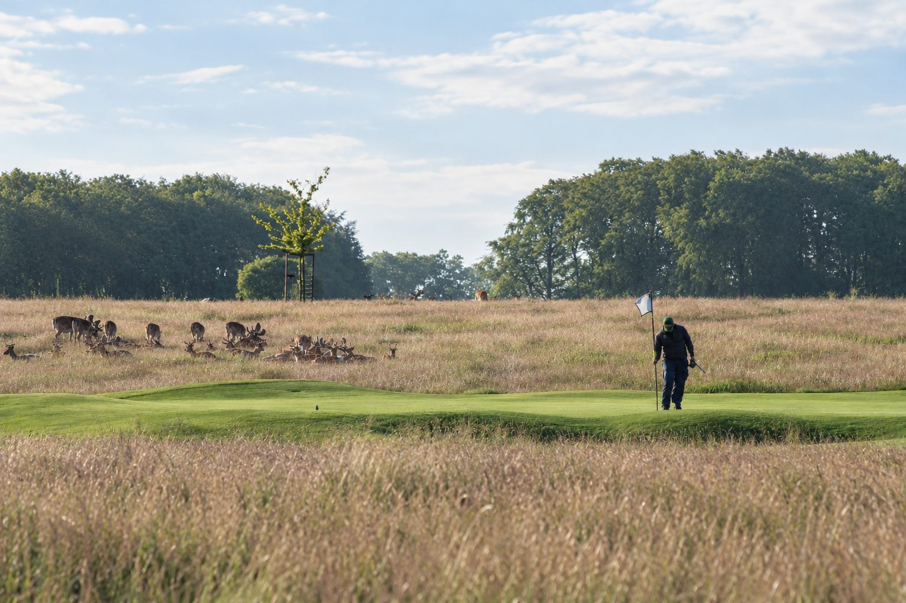
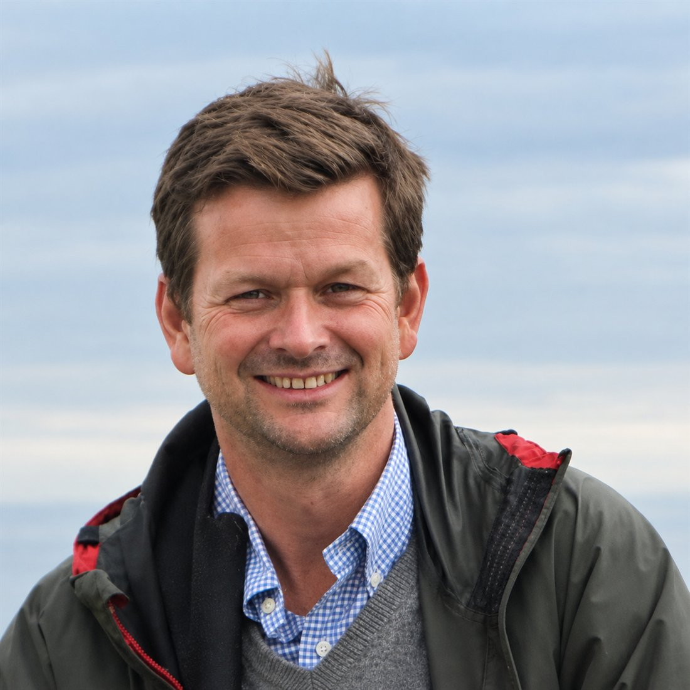
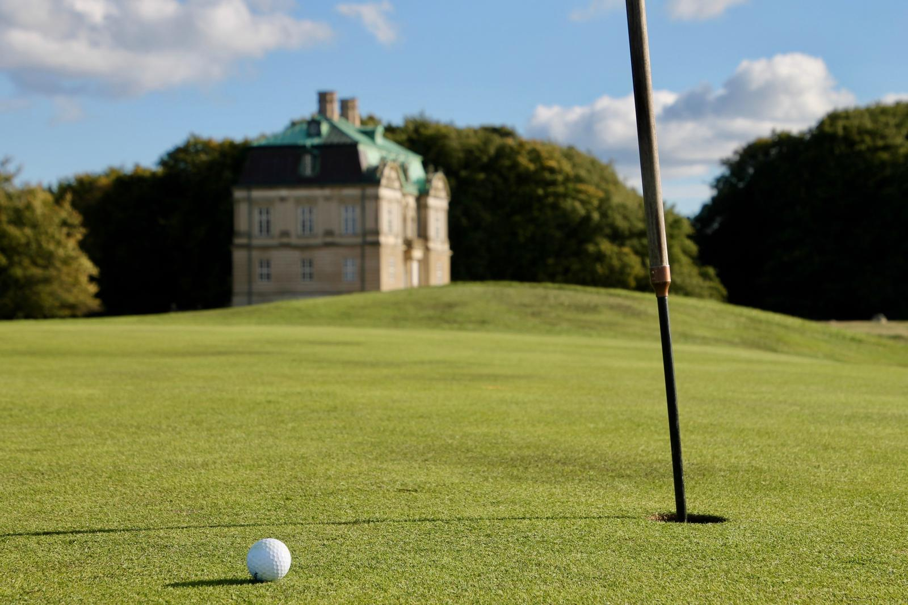
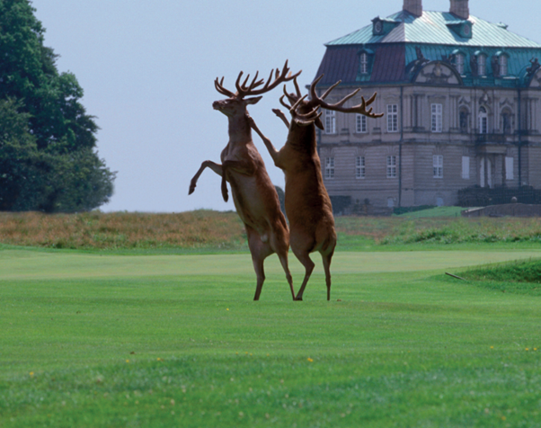

01
Agronomisk rådgivning
En uafhængig vurdering af banens sundhed, spillekvalitet og pleje. I får klare anbefalinger prioriteret efter effekt, behov og ressourcer.

Uafhængig agronomisk golfbanerådgiver
Jeg hjælper golfklubber med at udvikle robuste golfbaner og lykkes med pesticidfri banepleje – uden at gå på kompromis med spillekvaliteten.
Med over 20 års praktisk erfaring omsætter jeg agronomisk viden og greenkeeping i praksis til klare prioriteringer, konkrete løsninger og realistiske planer, der passer til banens forhold, klubbens ambitioner og økonomi.
Jeg rådgiver golfklubber i Danmark og Europa om vejen mod mindre pesticidforbrug og en mere robust, langsigtet banedrift.
Profil
Jeg hjælper chefgreenkeepere, klubledelser og bestyrelser med at omsætte ambitionen om mere bæredygtig banepleje til en løsning, der virker i praksis. Rådgivningen tager udgangspunkt i den enkelte bane, dens ressourcer og medlemmernes forventninger. Resultatet er en realistisk vej frem med tydelige prioriteringer, færre unødige input og fokus på en robust og spilbar bane.

Kompetencer
En uafhængig vurdering af banens sundhed, spillekvalitet og pleje. I får klare anbefalinger prioriteret efter effekt, behov og ressourcer.
En trinvis og realistisk plan for at reducere eller udfase plantebeskyttelsesmidler uden at miste fokus på spillekvalitet og medlemmernes oplevelse.
En langsigtet strategi for robuste græsarter og bæredygtig pleje af greens, fairways og teesteder, tilpasset banens forhold og ambitionsniveau.
Praktiske, overvejende ikke-kemiske metoder til at forebygge sneskimmel, dollar spot og stressbetingede sygdomme gennem græsvalg, timing, fugtighed og næring.
Plejeplaner, årlige evalueringer og flerårige prioriteringer, der balancerer spillekvalitet, ambitioner, budget og bemanding.
En klar vurdering og rapport til greenkeeper, ledelse, udvalg og bestyrelse. Faglige problemstillinger og myndighedskrav formidles, så både fagfolk og beslutningstagere kan handle på dem.
Tilgang
Naturen arbejder med dig, når du giver den de rette vilkår
En varig omstilling kræver en flerårig plan, der balancerer faglige mål, ressourcer og medlemmernes forventninger.
Jeg omsætter forskning og praktisk erfaring til løsninger, der virker på den enkelte bane.
Bæredygtig banepleje skal både reducere banens aftryk og fastholde en høj spillekvalitet.
Sygdomstryk og stressperioder kræver rolige, faglige beslutninger. Kortsigtede udsving vurderes i lyset af banens langsigtede udvikling.
Mine anbefalinger bygger på praktisk erfaring og et stærkt internationalt netværk af greenkeepere, forskere og branchefolk.
Erfaring
Københavns Golf Klub, Danmark
Sammen med arkitekt Phillip Spogard opnåede jeg myndighedsgodkendelse til at flytte beskyttede naturtyper og muliggjorde dermed anlægget under strenge fredningshensyn.
Planlægning og etablering af en ny vandboring til bæredygtig vandforsyning.
Sammen med arkitekt Tom Mackenzie planlagde og anlagde jeg fremskudte teesteder på seks huller for at gøre banen mere tilgængelig for nybegyndere og kortslående golfspillere.
Sammen med arkitekt Tom Mackenzie og entreprenør Frank Lowell medvirkede jeg til renoveringen af alle 18 huller, herunder teesteder, bunkers og greenområder.

Uddannelse
Greenkeeperuddannelsen, Danmark, 2001–2005
HA i erhvervsøkonomi, Copenhagen Business School, 1989–1992
Brancheledelse
Mit arbejde i danske og europæiske brancheorganisationer giver mig indblik i udviklingen af standarder, lovgivning og forskning inden for greenkeeping. Det omsætter jeg til rådgivning, der hjælper klubber med at træffe holdbare beslutninger og være på forkant med nye krav.
FEGGA-repræsentant i European Golf Associations strategiske arbejdsgruppe.
Federation of European Golf Greenkeepers Associations.
Medlem af rådgivende udvalg i Scandinavian Turfgrass and Environment Research Foundation.
Taler ved konferencer, events og workshops i Skandinavien, Storbritannien, Frankrig, Tjekkiet, Holland og Canada. Bidragyder til magasinet Greenkeeper International.
DGA-repræsentant i forhandlinger med Miljøstyrelsen om den nationale implementering.
Ni år i spidsen for den nationale forening.
Brancheanerkendelse
Udvalgt til University of Guelphs Superintendent in Residence-program.
Udnævnt til æresmedlem af Danish Greenkeeper Association.
Udvalgt artikel

I artiklen beskriver jeg, hvordan Københavns Golf Klub har holdt græsset sundt uden pesticider gennem minimale input og et skifte fra rapgræs til rødsvingel. Artiklen er også bragt i svenske Greenbladet og canadiske Turf & Rec.
“En vellykket overgang til pesticidfri drift kræver en langsigtet plan, der tager højde for banens forhold og klubbens ressourcer.”Læs artiklen (PDF)
Kontakt
Jeg tager udgangspunkt i jeres bane, ressourcer og klubbens ambitioner og giver jer klare anbefalinger, som kan omsættes til handling.